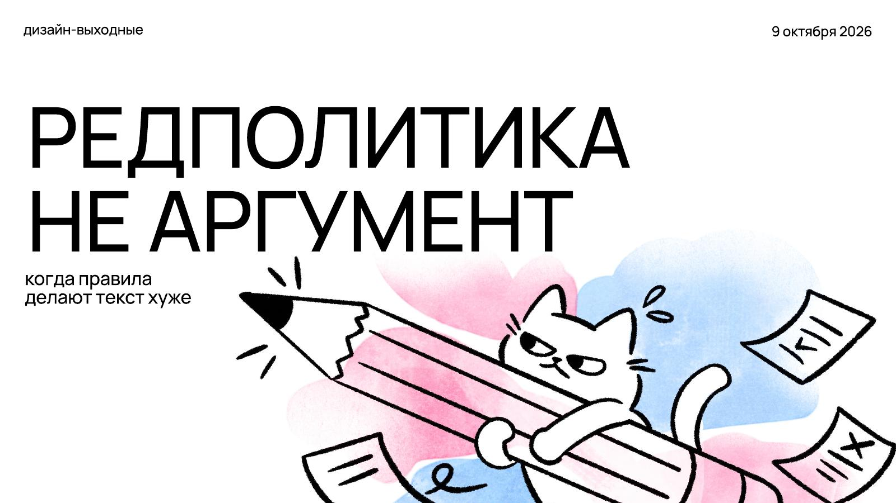
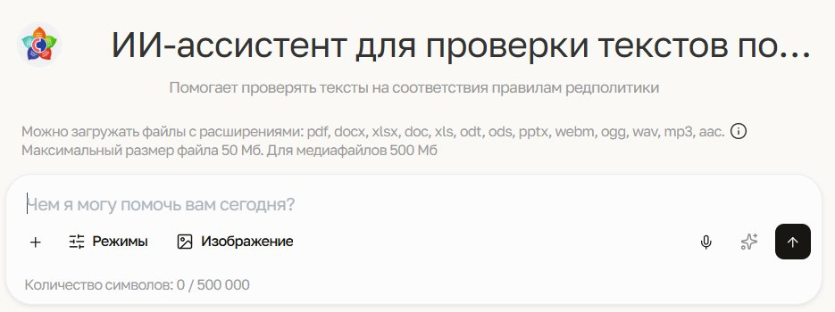
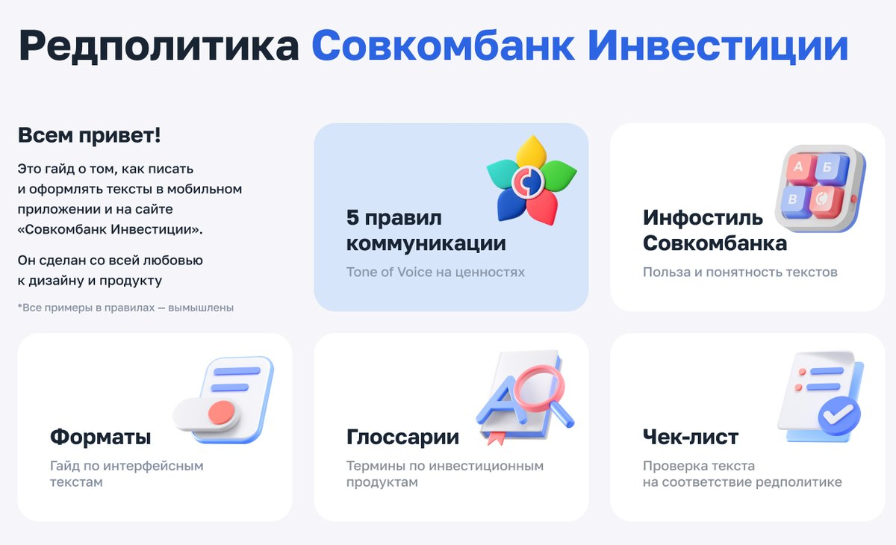
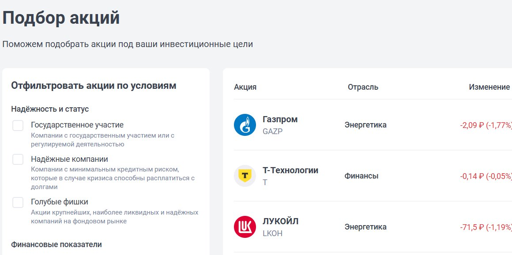
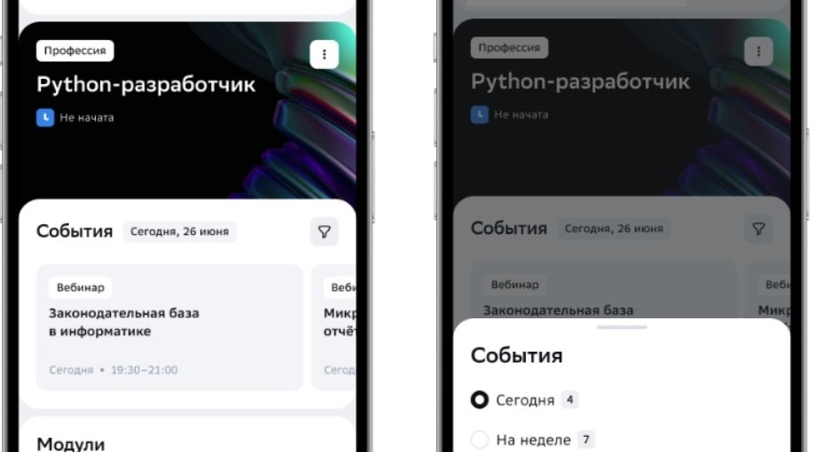
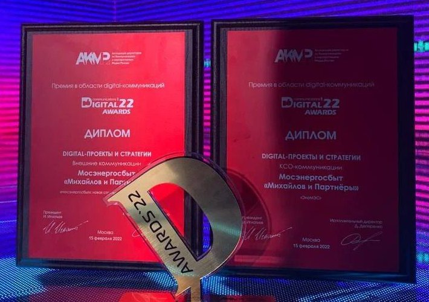
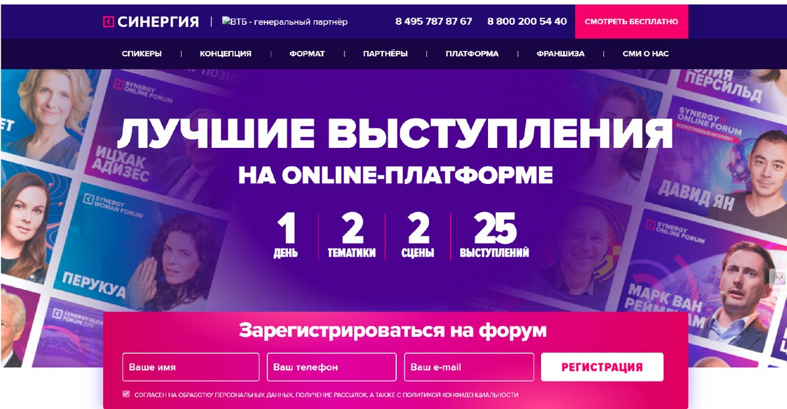

Выступление · 9 октября 2026
Дизайн-выходные. Тула
Доклад «Редполитика не аргумент: когда правила делают текст хуже» — по кейсу «Подбор акций».
Я UX-редактор: пишу и проектирую интерфейсные тексты для финтеха и EdTech, а всего работаю с текстами больше 13 лет — от школьных учебников до соцсетей энергохолдинга. Сейчас веду тексты инвестиционных продуктов в Совкомбанк Инвестициях. Люблю, когда текст реально упрощает человеку решение задачи.
UX-редактура интерфейсов, внедрение правил редполитики в продуктовые направления, исследования с пользователями, ИИ-ассистенты для редактуры и генерации текстов.
Выступаю на конференциях и пишу о редактуре, поездках и культпоходах в телеграм-канале «Бла Бла Бутенко».
Ведущий редактор проектов инвестиций · 2025 — сейчас
21 доработка промпта внутреннего ассистента. Доля ответов «справился» в тестах выросла с 33% до 76%.

Внедрение единого стандарта текстов в трёх инвестиционных продуктах, интервью с командами и гайд по 315 кнопкам.

Тексты для редизайна сервиса подбора акций. После первого этапа до расчёта портфеля стали доходить вдвое чаще.

Новая структура главной, профиля и карточки курса. Удовлетворённость студентов выросла с 52% до 75%.

Живой тон для консервативной аудитории энергохолдинга, экопроект и комикс. 3 награды AKMP.

Формат карточки спикера для онлайн-форума: 200+ карточек первого форума, сейчас на сайте 465.


Доклад «Редполитика не аргумент: когда правила делают текст хуже» — по кейсу «Подбор акций».
Ищу команду, где тексты проектируют вместе с продуктом. Напишите — обсудим.